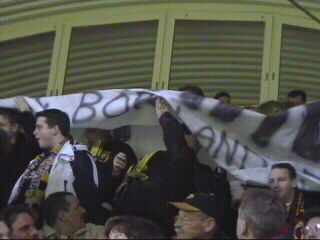
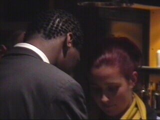

|
Roda JC - NAC (1-1) 15 maart 2002 |
Onze combi-gasten waren 2 a 300 man sterk.

Nadat Salmon al in de 9e minuut 0-1 scoorde,
ontvouwde zich een spandoek op Z16.
De tekst had betrekking op een eventueel bezoek
aan clubs als Veendam en Haarlem.
Pa Anastasiou scoort 1-1 (38).
PmR hangt het bijgeloof aan dat indien hij gedurende
de wedstrijd een hand met groene en een hand
met gele M&M's vastklampt, de wedstrijd gewonnen
zal raken. Zalig zij de........
Duel van Soetaers.
Er roffelde een swingend sambakoor op west.
Senden krijgt rood (2xgeel) na een domme handsbal.
Een van de prima reddingen van Kalac.
Na het gelijkspel schieten de tranen uit de grasmat!
Hij is er weer!
Onze vrienden van KV Mechelen: Pat en Melleke!

Regillio Vrede was de enige speler die het
supportershome bezocht.
Anti-NOS tuupe.
Op weg naar noord in een veel te kleine lift!
©KPD